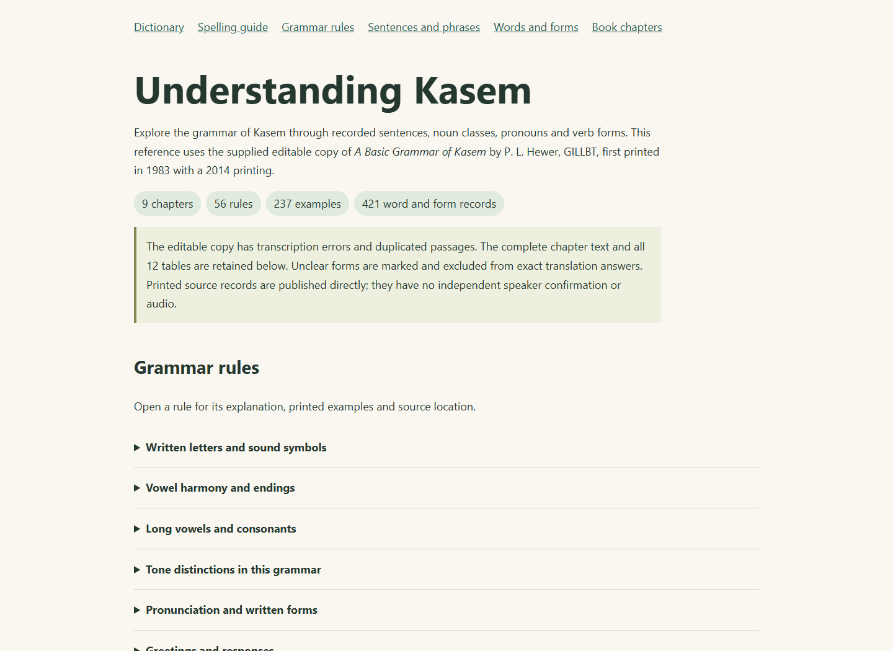
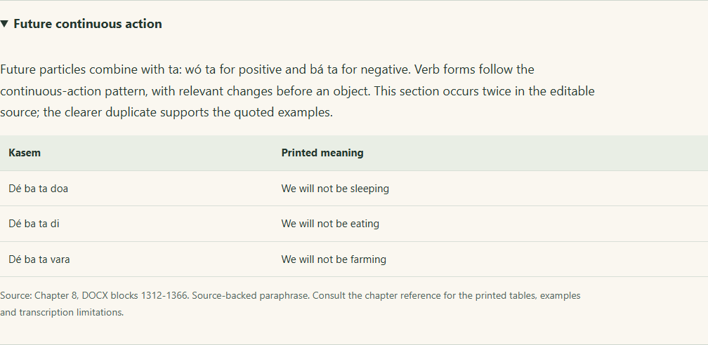
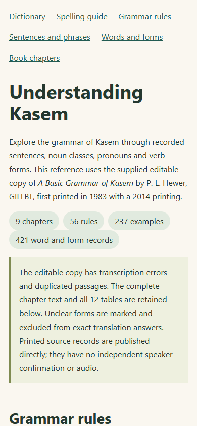

Kasem learners and writers can now explore the sentences, words and explanations in P. L. Hewer’s A Basic Grammar of Kasem through Indigen World. The supplied GILLBT book was first printed in 1983; this editable copy records a 2014 printing.

The source adds 363 new dictionary entries, nine expressions and book references on 47 existing dictionary entries. Its 421 word and form records include noun plurals, pronouns, class-specific determiners, verb forms and question words. Different meanings remain separate, and matching existing entries keep their earlier content and source history.
There are 237 extracted sentence and phrase examples in the guide. Of these, 196 clear pairs have been published for exact lookup. Commands, noun phrases and printed source renderings are identified by their context; they are not all conversational sentences. The remaining 41 examples have transcription uncertainties and remain clearly marked in the reference.
Fifty-six grammar summaries cover all nine chapters: sounds and writing, greetings, clause structure, noun phrases and pronouns, place and time, joining clauses, noun classes, verb phrases, and small words and questions. Each explanation gives its source location and available printed examples.

The complete editable source is also available to consult: all 1,638 ordered text blocks, all twelve tables and nineteen original illustrations are retained. The illustrations keep their positions beside the source passages. Readers can compare the pronoun, determiner, noun-class and verb-form tables with the grammar summaries. Source block numbers locate passages in this copy; they do not claim to be printed page numbers.
Open Grammar guide from the online dictionary, website dictionary or TribeStudio contributor editor. Expand a rule, search the sentence and word tables by Kasem or English, or open a chapter to read its source text and tables. The spelling guide links to it too.

Kawuri’s updated lookup can quote these grammar explanations and complete source examples. For example, ask about future continuous action or personal pronouns, or request a complete expression recorded in the book. Answers identify the printed source. Kawuri does not create new Kasem sentences by combining the book’s isolated words.
The editable document contains missing letters, transcription errors, uneven columns and repeated sections. Unrecoverable candidates stay visible in the chapter reference and limitations table. The source also disagrees with itself about some pronoun spellings. These differences are documented rather than silently resolved.
The corrected keyboard convention continues to use the written alphabet from the orthography guide. Phonetic symbols in this grammar describe sounds; they do not add new suggested letters. No recordings, independent speaker confirmations or model-training permission have been created by this import.
Release status: The dictionary records, expressions, 56 rules and 196 clear examples were directly published and verified in production on October 8, 2026. The grammar guide and navigation updates are deployed on the website, online dictionary and TribeStudio, with matching release files verified on all three hosts. Both Kawuri functions are deployed; the live chat returned the book’s future-continuous explanation and “I didn’t sweep” example with GILLBT attribution. Phone and desktop checks passed. This content update does not require a new keyboard binary. The article is prepared for Chinedum’s Blogger publication and remains unpublished.
Source credit: P. L. Hewer, A Basic Grammar of Kasem, Ghana Institute of Linguistics, Literacy and Bible Translation (GILLBT), first printed 1983; supplied 2014 printing. Copyright remains with GILLBT; no open licence is asserted.